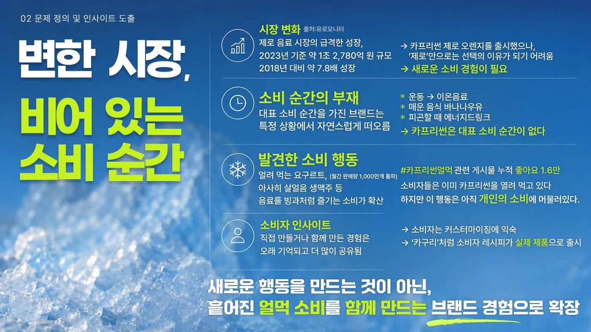
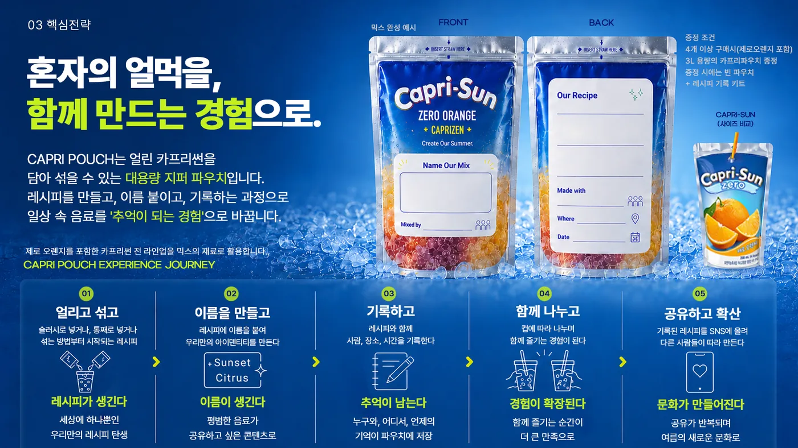

01Insight
새로운 행동을 만들 필요는 없었습니다.
Existing
#카프리썬얼먹 — 이미 하고 있었다
Problem
하지만 브랜드의 대표 소비 순간은 아니었다
Opportunity
개인의 ‘얼먹’ → 함께 즐기는 경험
이미 존재하는 행동을 브랜드 경험으로 확장했습니다.
02Strategy & Experience
‘얼먹’을 하나의 경험으로 설계했습니다.
CAPRI POUCH — 얼린 카프리썬을 담아 섞어 먹는 대용량 지퍼 파우치를 중심으로, 마시는 음료를 ‘함께 만드는 여름 경험’으로 바꿨습니다.
Freeze
얼리고
Mix
섞고
Name
이름 짓고
Record
기록하고
Share
나누고





03Execution
아이디어를 실제 캠페인 동선으로 확장했습니다.
01
Teaser
봄축제 캠페인 티저
02
Participation
방학 — 얼먹 경험 확산
03
Festival
캠퍼스 페스티벌 — 함께 즐기는 경험으로 확장
기획안 구성 · Key Visual · Problem · Strategy · Execution · KPI
04 · Takeaway
기존 행동을 바꾸지 않고, 브랜드의 소비 순간으로 확장했습니다.
소비자가 이미 하고 있던 ‘얼먹’에 브랜드의 자리를 만들어, 개인의 소비를 함께 즐기는 경험으로 넓혔습니다.
#카프리썬얼먹→CAPRI POUCH→캠페인 경험
새로운 소비를 만드는 것보다, 이미 존재하는 행동의 의미를 바꾸는 것이 더 빠른 전략이 될 수 있습니다.
※ 마케팅 공모전 제출 단계의 기획안입니다. (실행·검증 전 · 공모전 미선정)